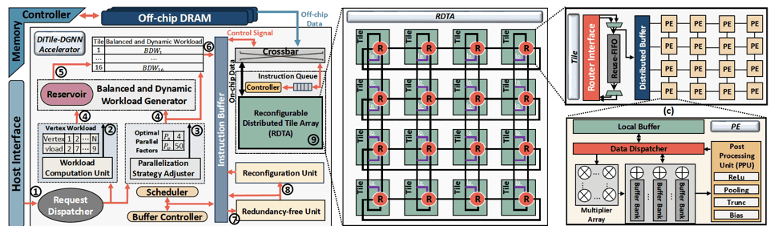
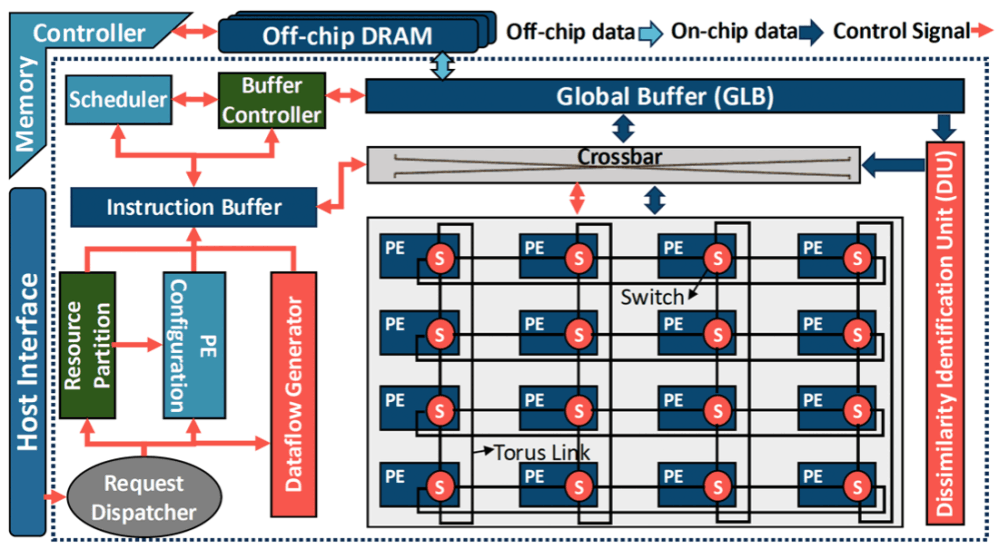
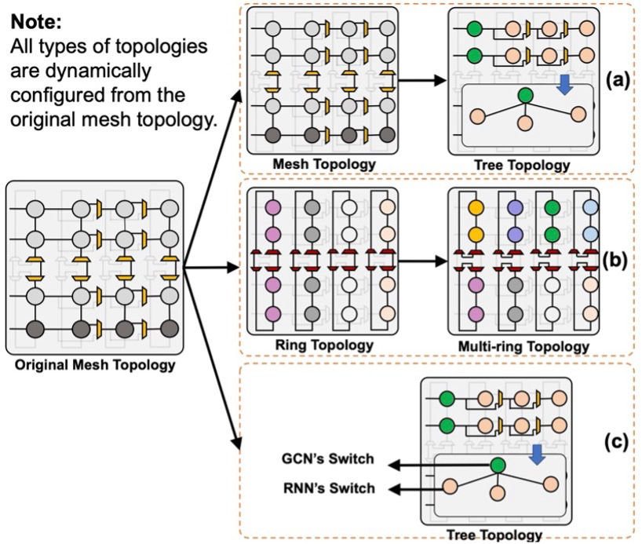

HTML Website Generator
As the size of both static and dynamic real-world graphs increases exponentially, graph-based processing and neural networks present significant challenges for conventional hardware platforms due to their irregular memory access patterns and high computational demands, often leading to substantial degradation in performance and energy efficiency. To address these issues, our research focuses on designing domain-specific accelerators that can efficiently support both static and dynamic graph workloads, with optimized performance and energy efficiency. Our research covers several critical areas: (1) Scalable dataflow architectures designed for irregular computation patterns, (2) Dynamic and static workload partitioning strategies to ensure balanced execution, (3) Intelligent memory systems that enhance data locality, reuse, and bandwidth utilization, and (4) Fine-grained parallelism and hardware-level optimizations to reduce latency and computational redundancy. We develop accelerator designs on FPGA and ASIC platforms, leveraging algorithm-hardware co-design principles to maintain high accuracy while pushing the limits of throughput and energy efficiency.
Dynamic Graph Neural Networks (DGNNs) have recently emerged as a promising model for learning complex temporal and spatial relationships in evolving graphs. The performance of DGNNs is enabled by the simultaneous integration of both graph neural networks (GNNs) and recurrent neural networks (RNNs). Despite the theoretical advancements, the design space of such complex models has signicantly exploded due to the combinatorial challenges of heterogeneous computation kernels and intricate data dependency (i.e., intra- and inter-snapshot data dependency). This makes the computations of DGNN hard to scale, posing significant challenges in parallelism, data reuse, and communication. To address this challenge, we propose DiTile-DGNN, an efficient accelerator for large-scale DGNN execution. The proposed DiTile-DGNN consists of a redundancy-free parallelism strategy, workload balance optimization, and a reconfigurable accelerator architecture. Specifically, we propose a redundancy-free framework that can efficiently find an efficient parallelism strategy that can fully eliminate the data redundancy between graph snapshots while minimizing the communication complexity. Additionally, we propose a workload balance optimization for combined GNN and DGNN models to enhance resource utilization and eliminate synchronization overhead between snapshots. Lastly, we propose a reconfigurable accelerator architecture, with a flexible interconnect, that can be dynamically configured in support of various DGNN dataflows.

Dynamic Graph Neural Networks (DGNNs) have recently been used in numerous application domains, comprehending the intricate dynamics of time-evolving graph data. Despite their theoretical advancements, effectively implementing scalable DGNNs continues to be a formidable challenge due to the constantly evolving graph data and heterogeneous computation kernels. In this paper, we propose I-DGNN, a theoretical, architectural, and algorithmic framework with the aim of designing scalable and efficient accelerators for DGNN execution with improved performance and energy efficiency. On the theory side, the key idea is to identify essential computations between consecutive graph snapshots and encapsulate them as a separate kernel independent from the DGNN model. Specifically, the proposed one-pass DGNN computing model extracts the process of graph update as a chained matrix multiplication between evolving graphs through rigorous mathematical derivations. Consequently, consecutive snapshots utilize a one-pass computation kernel instead of passing through the entire DGNN execution pipeline, thereby eliminating the costly data movement of intermediate results across DGNN layers. On the architecture side, we propose a unified accelerator architecture that can be dynamically configured to support the computation characteristics of the proposed I-DGNN computing model with improved data and pipeline parallelism. On the algorithm side, we propose a new dataflow and mapping tailored for I-DGNN to further improve the data locality of inter-kernel data across the DGNN pipeline.

Dynamic Graph Convolutional Networks (DGCNs) have been applied to various dynamic graph-related applications, such as social networks, to achieve high inference accuracy. Typically, each DGCN layer consists of two distinct modules: a Graph Convolutional Network (GCN) module that captures spatial information, and a Recurrent Neural Network (RNN) module that extracts temporal information from input dynamic graphs. The different functionalities of these modules pose significant challenges for hardware platforms, particularly in achieving high-performance and energy-efficient inference processing. To this end, this paper introduces HiFlex, a high-performance and flexible accelerator designed for DGCN inference. At the architecture level, HiFlex implements multiple homogeneous processing elements (PEs) to perform main computations for GCN and RNN modules, along with a versatile interconnection fabric to optimize data communication and enhance on-chip data reuse efficiency. The flexible interconnection fabric can be dynamically configured to provide various on-chip topologies, supporting point-to-point and multicast communication patterns needed for GCN and RNN processing. At the algorithm level, HiFlex introduces a dynamic control policy that partitions, allocates, and configures hardware resources for distinct modules based on their computational requirements.

HTML Website Generator